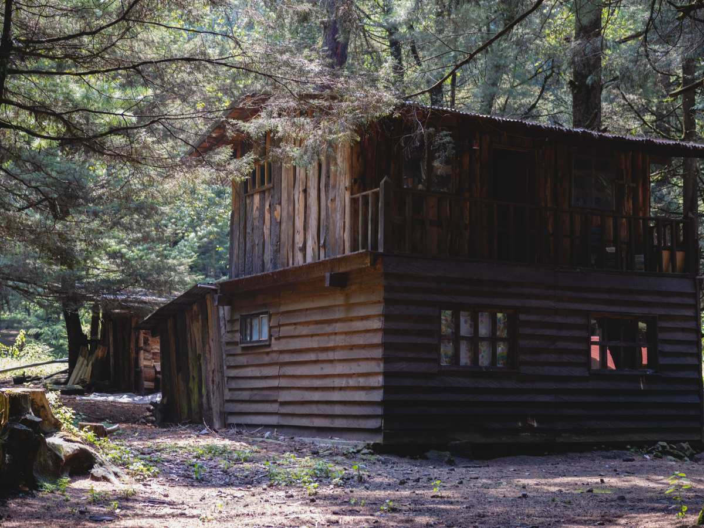
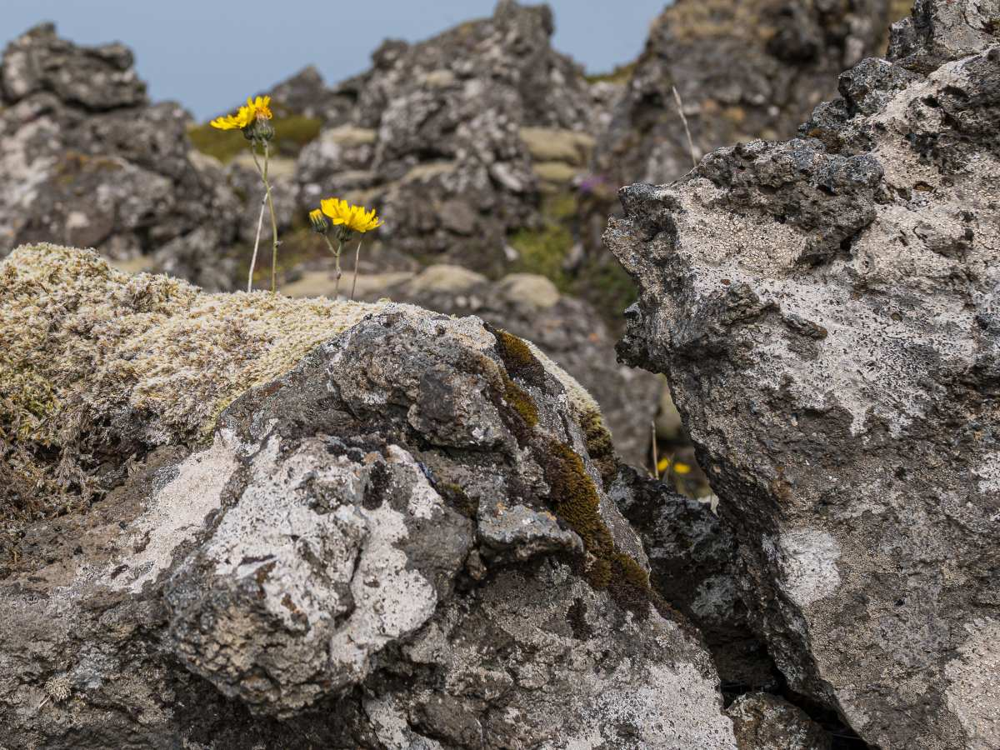
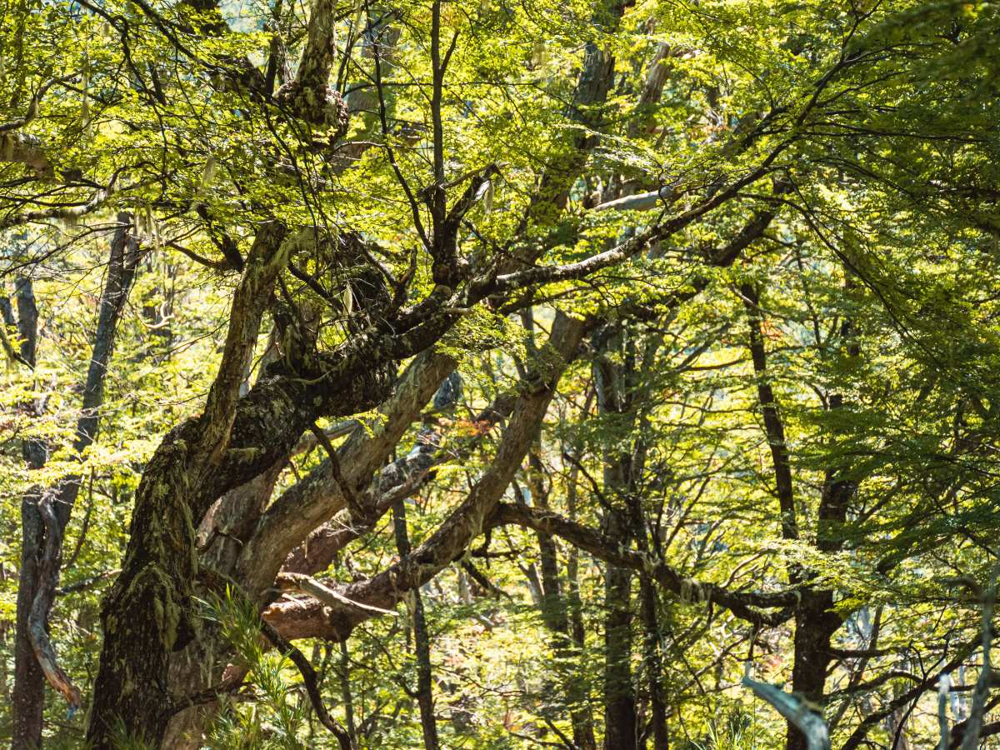
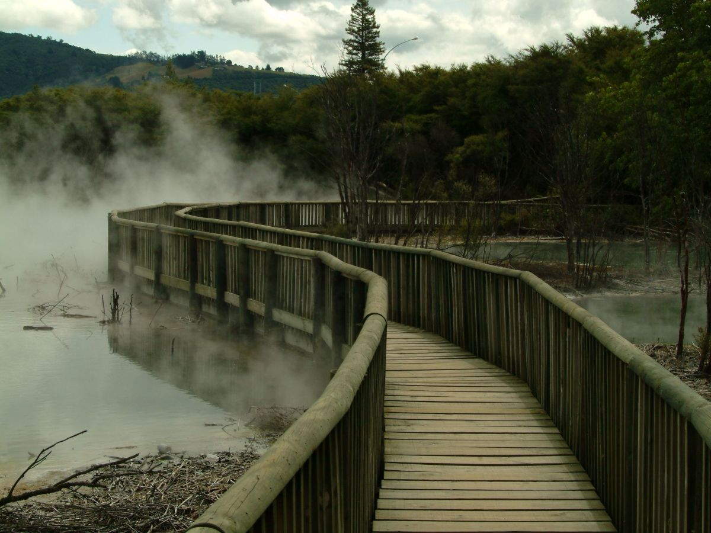
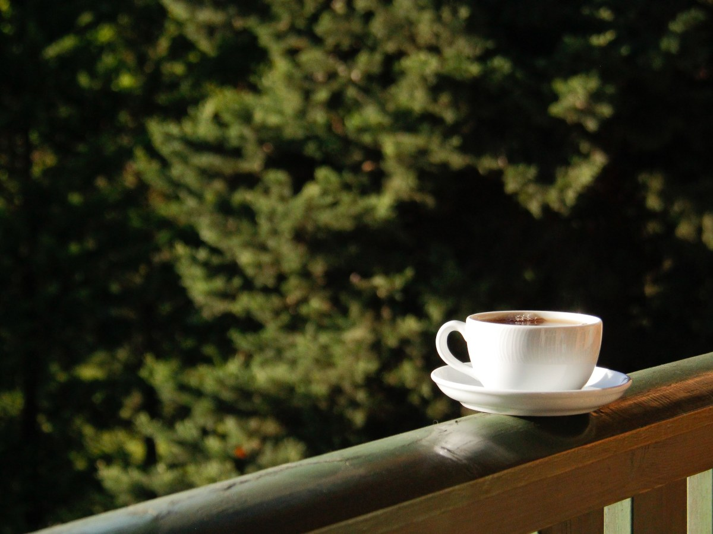
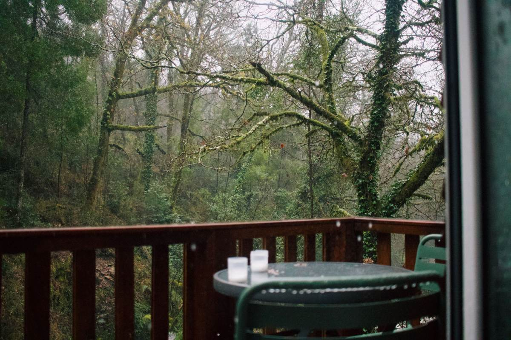
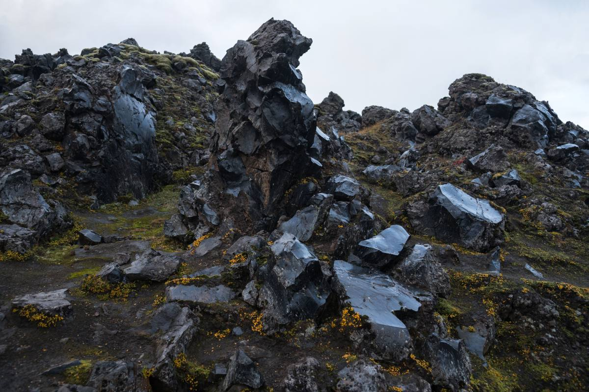
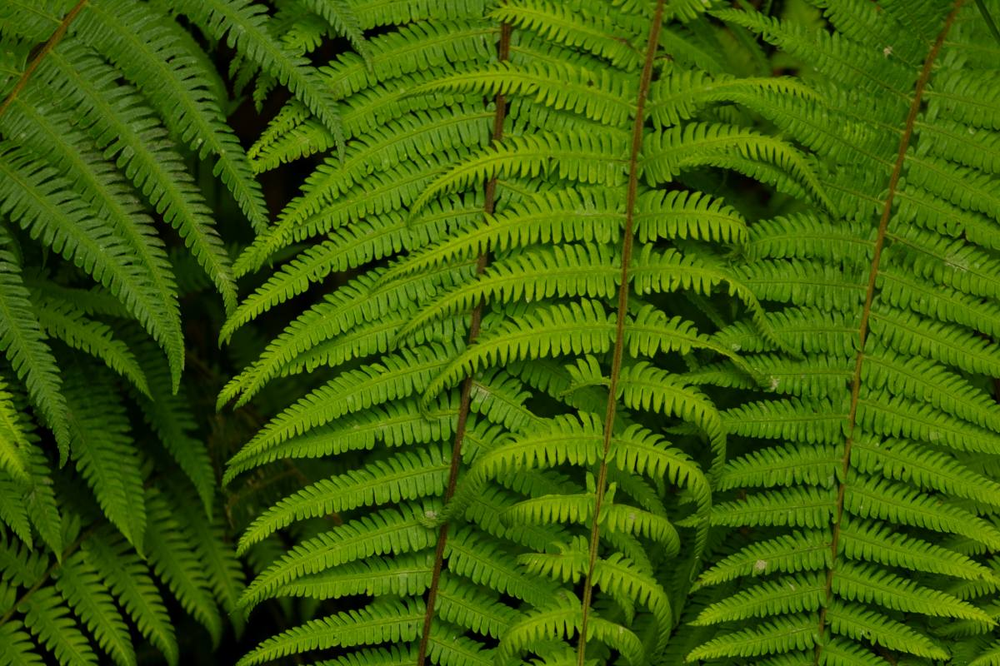
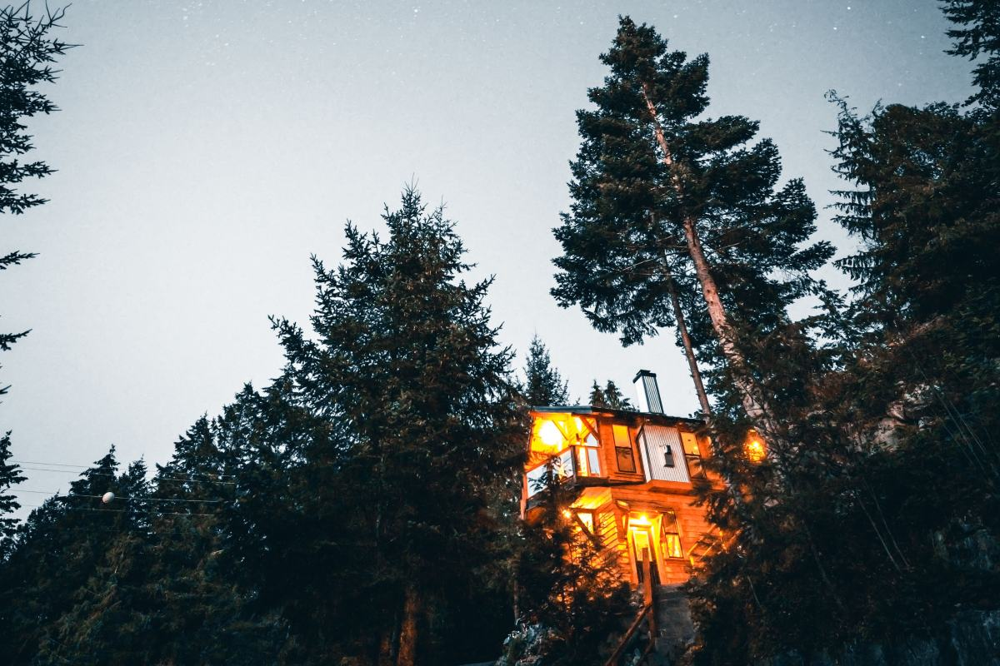
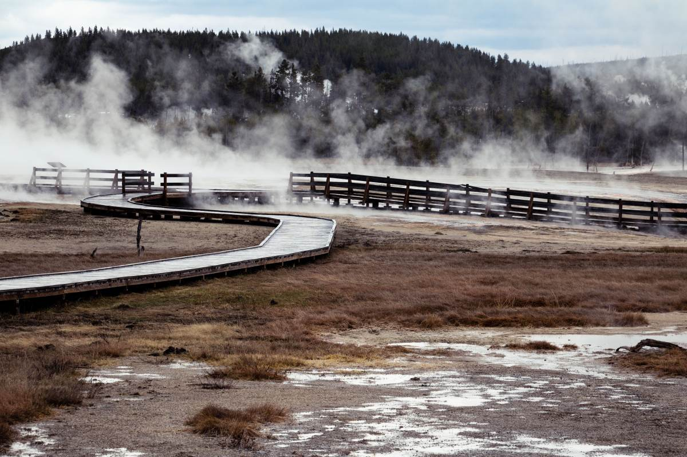

Coñaripe · km 16 del camino a Licán Ray
Madera nativa sobre roca volcánica.
Cabañas en el bosque, a minutos de las termas y del lago.
- 150reseñas en Google
- 12km a las Termas Geométricas
- 16km del camino a Licán Ray
- 0páginas propias: sólo portales y TikTok
Para armar el bolso
¿Qué trae la cabaña?
Lo que ya está adentro, para no cargar de más.
- 01
Cocina equipada
Refrigerador, microondas, tostador y cafetera.
- 02
Ropa de cama y loza
No hay que traer sábanas ni platos.
- 03
Wifi y TV cable
Para las tardes de lluvia.
- 04
Estacionamiento
Privado y sin costo.
Equipamiento de sus fichas publicadas; lo que cambió lo confirma la casa.
Bosque nativo, piedra y vapor.
En el camino a Licán Ray
Lo que rodea a las cabañas
-

Lo que las distingue
Madera nativa
Cabañas rústicas de madera del sur.
-

Debajo
Roca volcánica
El terreno sobre el que están construidas.
-

Alrededor
Bosque nativo
Con el sonido de los pájaros.
-

A 12 km
Termas Geométricas
Pozones de agua caliente en la quebrada.
-

Cerca
Lago Calafquén
Para deportes de agua.
-

En la mañana
Balcón al bosque
Café mirando los árboles.
Madera, roca, bosque, termas, lago y estacionamiento salen de sus fichas publicadas.
150 reseñas en Google.
En el bosque de Coñaripe
Leña, vapor y helecho
Unos días en Coñaripe





Fotos de referencia: ninguna es de las cabañas.
Dónde estamos
Km 16, camino a Licán Ray
- Ubicación
- Km 16 camino Licán Ray, Coñaripe
- +56 9 8961 9653
- TikTok
- @alto.conaripe
- Capacidad
- Falta cuántas personas por cabaña
Consulte antes de ir: valores y disponibilidad cambian por temporada.
Cabañas Alto Coñaripe Abrir en Google Maps
Para el dueño
Qué es real y qué falta
Lo verificado
El teléfono, la ubicación, el equipamiento y el entorno de sus fichas, y las 150 reseñas.
Lo de ejemplo
Las fotos: ninguna es de las cabañas.
Lo que falta
Cuántas cabañas hay, para cuántas personas, los valores y fotos propias.